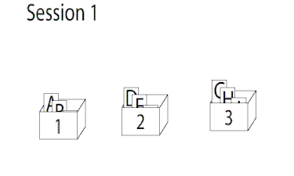

InnovateSphere - Efficient Study Method
Table of Contents

Introduction
InnovateSphere presents an efficient study method inspired by Sebastian Leitner's spaced repetition technique. This method optimizes learning through organized review intervals, ensuring better retention and recall.
Sebastian Leitner (1919 – 1989)
Sebastian Leitner, a German commentator and Science Popularizer, devised the spaced repetition technique. His method revolutionizes learning by employing spaced intervals for effective memorization.
Understanding the Leitner Method
The core principle involves using multiple compartments in the same box, each with a different review period. Another key principle is the flashcard method, featuring a front side presenting a phrase or image, while the reverse side provides the corresponding answer or information. Here's how it works:
How It Works
- Repetition is the key to memorize

- Utilizes multiple compartments, each with increasing review intervals.
- When you answer correctly, the card progresses to the next box.
- An incorrect answer results in the card moving back to the initial box for revision.


Why you should use InnovateSphere
Facilitates learning:
| What | How |
|---|---|
| translation | Basic words/sentences |
| Citation | Gaped Sentence |
| definition | Basic words/sentences |
| location | Picture |
| date | Basic words/sentences |
What
- translations
- associations
- definitions
- dates
- concepts
- location
How
- gapped sentences
- pictures
- basic words/sentences
Recommended Review Frequency
- Box 1: Daily
- Box 2: Every two days
- Box 3: Weekly
- Box 4: Every two weeks
- Box 5: Monthly
Enhancing Learning
- Leverage social media techniques:
- Implement streak methods.
- Send notifications for daily reviews.
Features
Review Module
- Complete daily reviews
- Manage previous reviews that are pending or unfinished
Statistical Analysis
- Track daily, weekly, monthly, and overall progress
- Detailed insights on total reviews, numbers, dates, etc.
- Specifics on each reviewed card and box
Sharing Capabilities
- Share Boxes
- Share personal boxes with other users
- Rate other users' boxes for improved search and sorting functionality
- Share progress and statistics
- Exchange personal statistics with friends
Frequently Asked Questions (FAQs)
How to Maximize Learning?
Engage actively with flashcards, ensure consistent daily reviews, and aim for gradual progress through the boxes.
How to Handle Difficult Concepts?
For challenging cards, consider breaking them down into smaller, digestible parts.
Can I Customize Review Intervals?
Yes, adjust intervals based on personal learning patterns and card difficulty.
Conclusion
The InnovateSphere method, with its structured review intervals and interactive learning approach, stands as an effective tool for mastering various subjects.